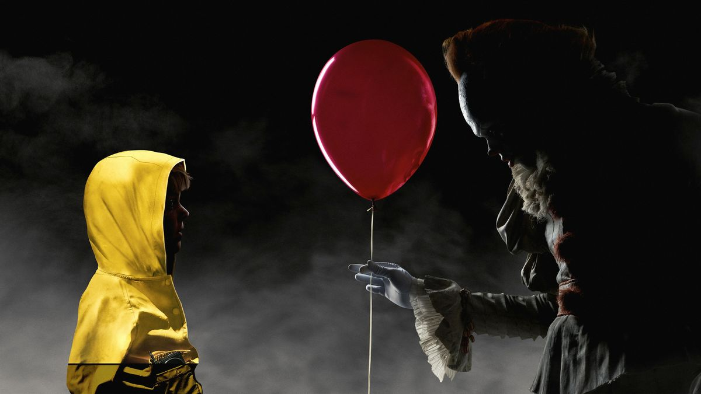
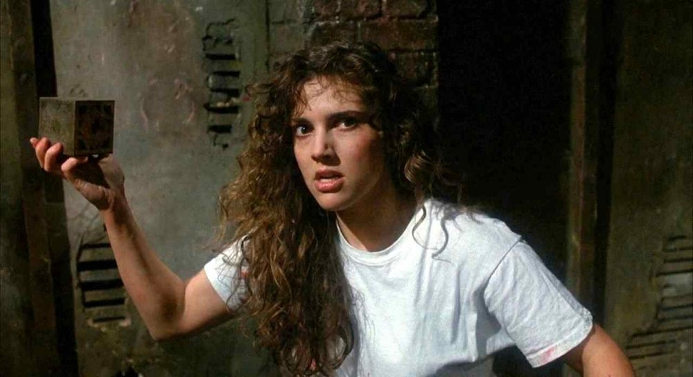
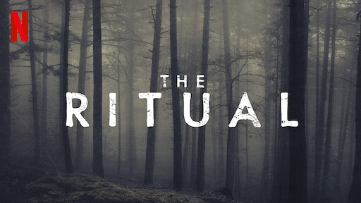
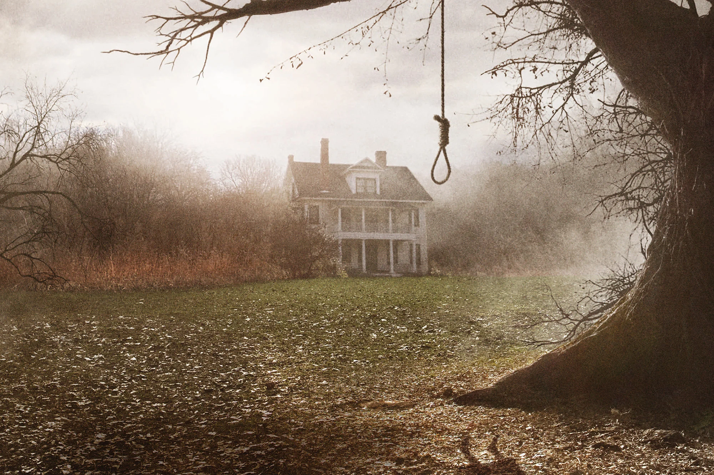

Horror Movies Are Rad
Here are some of the best ones ever, in no particular order.
1408

1408 is based off of a Stephen King short story, and it's absolutely my favorite horror movie of all time. John Cusack shines in a role where it's pretty much just him and a camera for 90% of the movie. This adaptation is better than good, a subtle nod is given to Dante's Inferno, and the scares are just as important as the messages of dealing with grief.
Stephen King's IT (1&2)
I guess I just like Stephen King a lot, but I think any list would be lacking without these two movies. And yes, I am grouping them together. The first installment, Part 1, is scarier, but the second one is poignant and well acted. They're very much the same story.
Hellraiser
Clive Barker's 1987 film Hellraiser is a classic that belongs on any list. The practical effects are good, although the cg is (obviously) quite outdated. It's not all camp, and the premise of the puzzle box and the cenobites are still scary to this day!
The Ritual
David Bruckner's The Ritual, based on a novel of the same name by Adam Neville is something of a sleeper hit. It's atmospheric and focuses a lot on survivor's guilt. A horroifying tromp through an unknown forest should be enough of a scare, but the monster at the end is worth all the time the viewer spends waiting for it.
The Conjuring
The Conjuring is the first, and arguably best, film in the Conjuring universe. It's frights are well paced, and the plot is gripping enough where you don't always see where things are going. Ed and Lorraine Warren are horror mainstays!
Runner ups:
- Alien / Aliens: I'd classify it more as sci-fi than horror, for at least the second one, but A+.
- The Babadook Beautiful art, compelling story that's more about grief than horror.
- Hereditary A24 is constantly killing it, and this is one of the best.
- Pumpkinhead Is this movie great? Not really. But the practical/creature effects are amazing even 35 years later.
- Hush Home invasion isn't really my thing, but this one is with a twist that makes it worth it. Subtract several points for not using an actual deaf actress though.